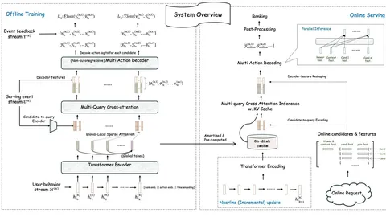

Разбираем статью LinkedIn о TransX — архитектуре рекомендательной модели, которая позволяет работать с длинной историей пользователя, не обрабатывая её заново при каждом запросе.
Многие последовательные и генеративные рекомендательные модели объединяют действия пользователя, показы и обратную связь в один поток токенов. Это удобно для обучения, но создаёт две проблемы:
1) Пользовательские действия и показы происходят по-разному. Человек может искать, просматривать профили и публиковать контент независимо от рекомендаций. А обратная связь возникает только после того, как система что-то ему показала.
2) При каждом новом запросе приходится заново обрабатывать длинную историю пользователя, хотя большая часть вычислений от текущих кандидатов не зависит.
Авторы предлагают разделить эти процессы и вынести обработку истории из онлайн-ранжирования, сохранив при этом возможность учитывать каждого конкретного кандидата.
Входные данные разделяют на два потока:
Behavioral stream — действия пользователя, которые происходят независимо от конкретного рекомендательного запроса.
Serving stream — контекст запроса и кандидаты, которых система собирается показать пользователю.
Первый поток обрабатывает causal Transformer, которому доступна история за последние 180 дней. Причём модель не запускают заново при каждом запросе: представления пользовательских действий вычисляют заранее, в nearline, и сохраняют в кеше.
Благодаря causal attention при появлении нового события старые представления остаются актуальными. Поэтому историю можно обновлять постепенно, не пересчитывая её целиком.
Второй поток работает уже во время запроса. Каждый кандидат формирует свой query и через cross-attention обращается к сохранённым представлениям поведения пользователя.
Получается, что длинную историю достаточно обработать заранее, а онлайн выполнять только вычисления, которые зависят от конкретного кандидата.
Но даже если история уже закеширована, показывать каждому кандидату все действия за 180 дней слишком дорого.
Поэтому авторы предлагают использовать два источника контекста:
Локальный — последние 10 действий пользователя. Они помогают учитывать его актуальные интересы.
Глобальный — один токен, в который с помощью attention pooling собирается информация обо всей доступной истории, включая последние действия.
Так модель получает и свежий контекст, и общее представление об интересах пользователя.
Полный аттеншн по всей истории даёт немного лучшее качество по AUC, но требует 220 MFLOPs на кандидата против 60 у local-global cross-attention. Поэтому авторы выбирают более дешёвый вариант.
Как избежать повторных вычислений
В TransX есть два уровня переиспользования результатов.
Первый работает между запросами одного пользователя. Длинная история обрабатывается заранее и хранится в nearline-кеше. При новом событии достаточно обновить состояние, а не запускать трансформер на всей истории.
Второй — между кандидатами внутри одного запроса. Для выбранных представлений пользовательского поведения один раз вычисляют ключи и значения K/V. Затем каждый кандидат строит собственный Q и обращается к одним и тем же K/V через cross-attention.
При этом вычисления для конкретного кандидата всё равно выполняются отдельно. Но повторять одни и те же проекции пользовательской истории больше не нужно.
Что в итоге
Главная идея TransX — разделить вычисления, которые зависят от кандидата, и те, которые можно выполнить заранее. Это позволяет сохранить длинную пользовательскую историю и при этом значительно сократить нагрузку на онлайн-ранжирование.
Но здесь возникают новые вопросы: как поддерживать кеш актуальным, что делать при сбоях и насколько сильно такая архитектура ускоряет рекомендации на практике? Об этом — во второй части.
@RecSysChannel
Разбор подготовил
